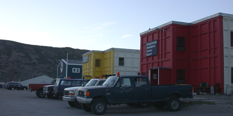
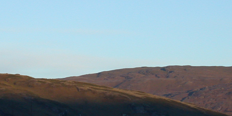

| July 25, 2005 >| >>| | |
|
A 4:15 wakeup call may work well for benjamin franklin (healthy, wealthy, and wise) but honestly, he was off his rocker on this one. We arrived at Stratton AFB near Schenectady, NY and offloaded our luggage. It was, I suppose, a typical part of the miliary: hurry-up (you must arrive by 5:15!) and then wait (briefing and loading will begin around 7, wheels-up at 8). We were hardly the only ones going - there were a total of three LC-130 planes that left the tarmac this moring, bound for kangerlussuaq. Not all of them were full of mad scientists and engineers seeking the ends of the earth: I suspect that at least one of them was flight crew and cargo only. I gather that, during the week that they are on station here in kangerlussuaq, the Air National Guard make quite a number of trips around the island: to a few other science stations, twice to Summit, and so on. It is getting late in the season, so it is also time for many of the folks that have already been here for a few weeks or months to pack it up and head home. For instance, while there are some 50 people at Summit station right now, there will only be about 20 by week's end. Traveling in an LC-130 must be a task originally intended to wear down the resistance of captured enemy combatants or something. Three large pallets of gear, strapped in place by a number of cargo nets, occupied the rear 2/3 of the plane. Seating in the forward 1/3 of the aircraft consists of seats intended to be easily removed and reconfigured. Hence, they are benches made of tubular aluminum and yet more cargo netting. Comfort aside, certainly the hardest part of the whole trip is the noise. Little plugs of foam are quite useless against the fact that the entire interior of the plane vibrates. Not just a simple humming or buzzing, but a vibration so pronounced that it telegraphs through the deck plates, through the soles of your shoes, tickles the souls of your feet, propogates through your tibia, and so on. Before long, you can feel the vibration permating every atom in your being. The cargo netting that you rest your back against likewise quivers beneath you. This is one factor that makes sleep (at least for me) impossible - if you allow your ear to contact any surface inside the plane, the noise will be conducted straight into your skull, bypass the ear canal and cochlea, and shake your brain like a bowlful of jello. Anyway, after some 7 hours of travel time, we touch down in Kangerlussuaq. It is a fair-sized town, by Greenlandic standards, that is dominated by an airfield that was built and once belonged to the US when we feared imminent attack from the soviets streaming from iceland, or something. Now it is a fairly large airport facility (still capable of accepting a B-52 in a blizzard!) that serves as a sort of port-of-entry for the whole island. The landscape is really quite different than my expectation. The weather was, quite atypically, gorgeous: about 65 and very sunny. A wonderful afternoon for strolling about. On all sides are ridges, promontories, and deeply cleft hillsides that mark the passage of glaciers so long ago. The rock still bears marks of a torturous existence. The hillsides are covered by a combination of grasses and shrubs that must have been specially designed and placed here by some higher power, if they are able to scape a living clinging to the rock and morraine. Note to all greenlandic travelers: whatever you might think to bring or will want during your trip, bring it yourself. Even assuming that you can locate some object that you forgot, intentionally left behind, or figured to obtain when you get there, the sheer resource that goes into getting it there to you increases the price substantially. Consider a $2.50 candy bar, or a $5 beer. No wonder the air crews were loading up cases of labatt blue and coolers by the pallet-full this morning. Here I must sign off - it has been a long day or difficult travel. We'll be up at 6 tomorrow (which, due to the 2 hour time difference, is actually 4 EST - no rest for the weary) for our 8 am flight to Summit, where we shall spend the next two weeks. --Alex Streeter |
|
|  | |
| The dorms in Kangerlussuaq may look a bit like ice-cube trays, but the accomodations inside are very homely. |
|
|  | |
| Even at 10pm local time, the sky is alight and the sun shines golden on the hills that surround the town for miles. |
|
| July 25, 2005 >| >>| |
| [Main] | [Mission] | [Design] | [Science] | [Papers] | [Pictures] | [Team] |
|
Last Updated on 10/20/2005 by Streeter
Site © Thayer School of Engineering, Dartmouth College, Hanover, N.H. |